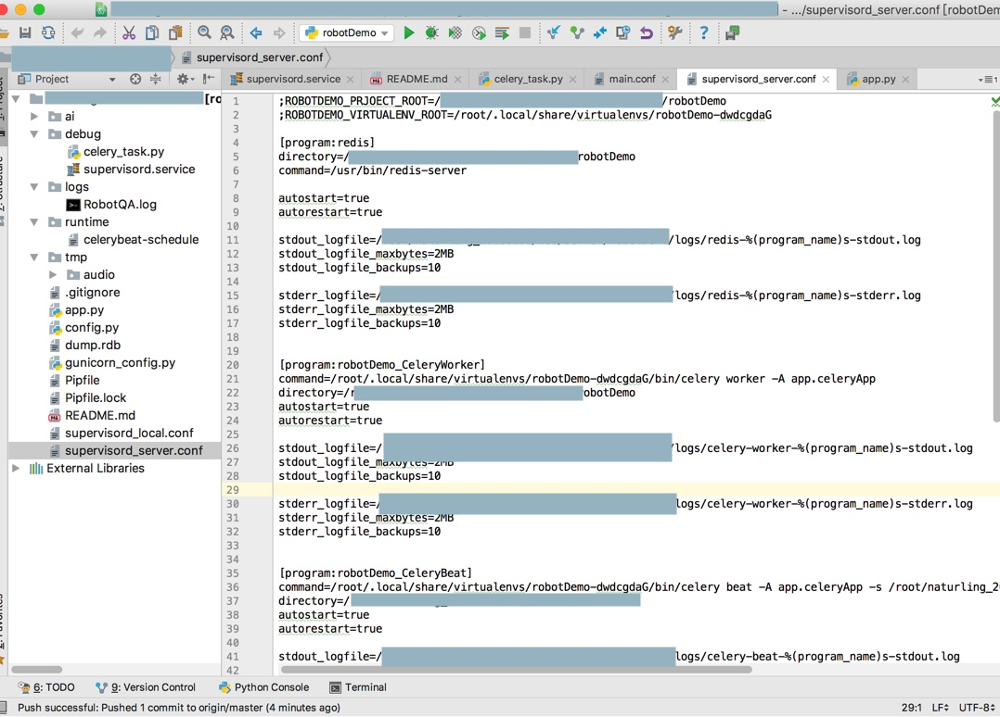
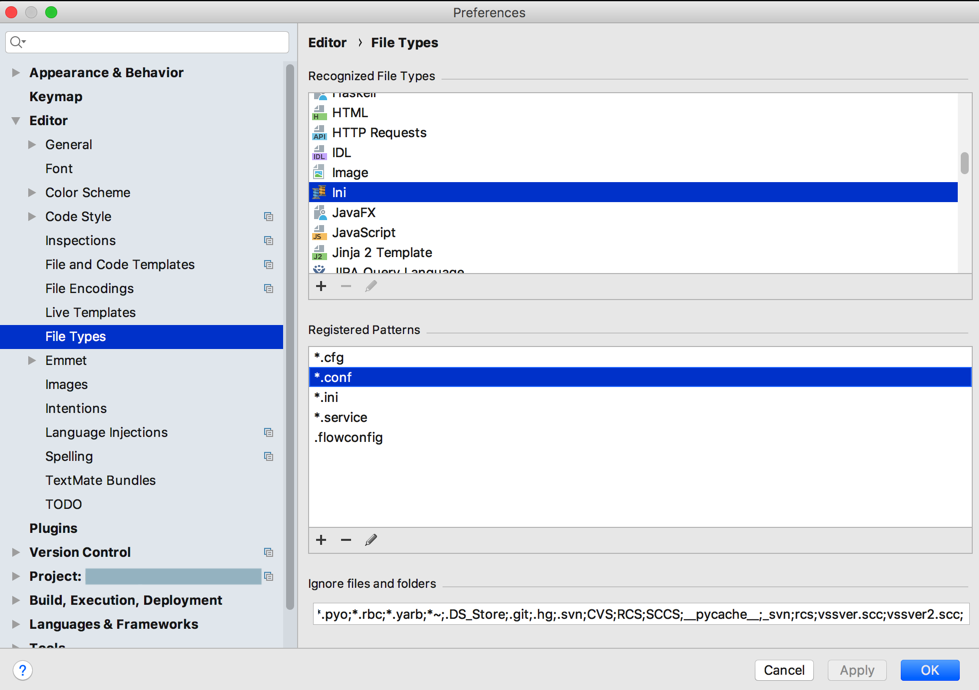
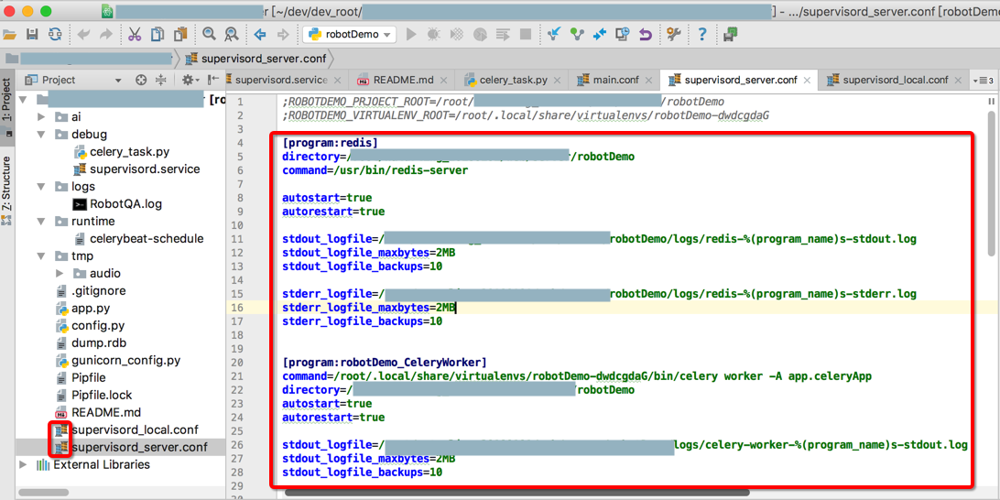

问题和心得
已知问题
PyCharm也有一些小问题。整理如下：
log文件的语法高亮
记得，之前默认就已支持log日志文件的语法高亮显示的。
但是后来不知道何时何故log文件失去语法高了
去折腾过
但是并没有解决。
抽空再去找原因。
偶尔会一直indexing重建索引
PyCharm偶尔会有个bug：
一直处于indexing，且CPU占用率很高
解决办法：
File->Invalidate Caches/Restart->重启PyCharm
一般均可解决。如果还不行，再多试试几次。
详见：【已解决】PyCharm一直在重新indexing建立索引
不支持在Markdown中粘贴图片
PyCharm中在Markdown中，不支持粘贴图片：
【未解决】PyCharm中markdown编辑器支持粘贴图片
其实这个问题，严格意思上不算是PyCharm的问题，而是属于Markdown的插件的问题。
但是与之对比，VSCode中支持Markdown中粘贴图片，很是好用：
Paste Image · 史上最好用的编辑器：VSCode
【已解决】VSCode中插件Paste Image的粘贴图片快捷键Command+Alt+V失效 – 在路上
PyCharm心得
此处整理一些使用PyCharm的经验和心得。
更改文件类型使其语法高亮
macOS中conf文件之前被识别为Text，没有语法高亮：

想要改为ini格式，以便于文件内容可以被语法高亮。
具体步骤：
PyCharm->Preferences->Editor->File Types for macOS
然后删除Text中的*.conf
再给ini格式加上*.conf

即可使得此处的conf文件，语法高亮显示了：
